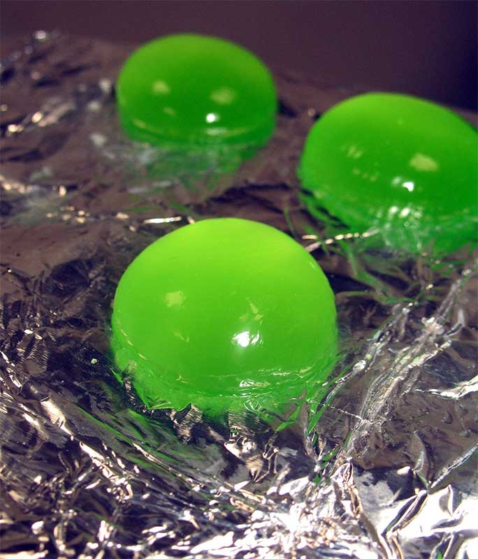

Œufs d'Alien façon moléculaire. 
 30min
30min- Difficulté :

- Technique(s) : Sphérification
Ingrédients
As
Alginate de sodium
- 2g d'alginate de sodium
- 100 ml d’eau pauvre en calcaire
- 100 ml de sirop vert (menthe, melon, kiwi, pomme verte, cactus…)
- 1 yaourt à boire
- 200ml d’eau du robinet

Préparation
- Mixer l’Alginate avec l’eau pauvre en calcium et le sirop. Laisser reposer une vingtaine de minutes.
- Verser le yaourt dans un grand verre et ajouter l'eau du robinet. Remuer.
- Pour réaliser un caviar vert : prélever le mélange contenant le sirop avec une pipette et laisser tomber goutte à goutte dans le yaourt dilué. Retirer les perles avec une cuillère percée et les rincer à l'eau. Déguster.
- Pour réaliser des œufs d’Alien : remplir le fond d’une cuillère du yaourt dilué et verser le sirop mélangé avec l’alginate au centre de cette goutte jusqu’à atteindre le haut de la cuillère. Déposer la cuillère sous la surface du yaourt dilué et retourner la bulle ainsi formée.